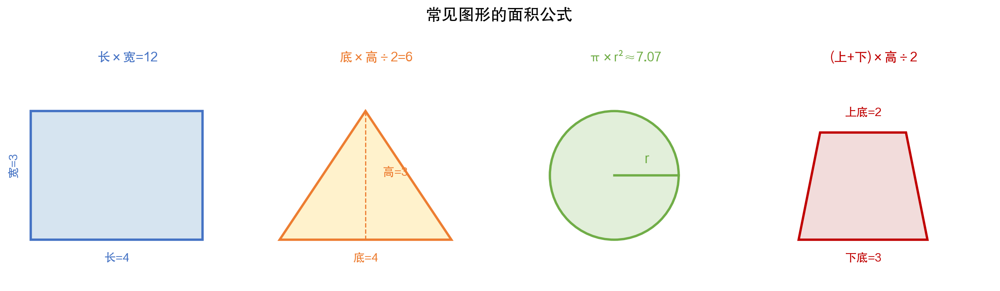
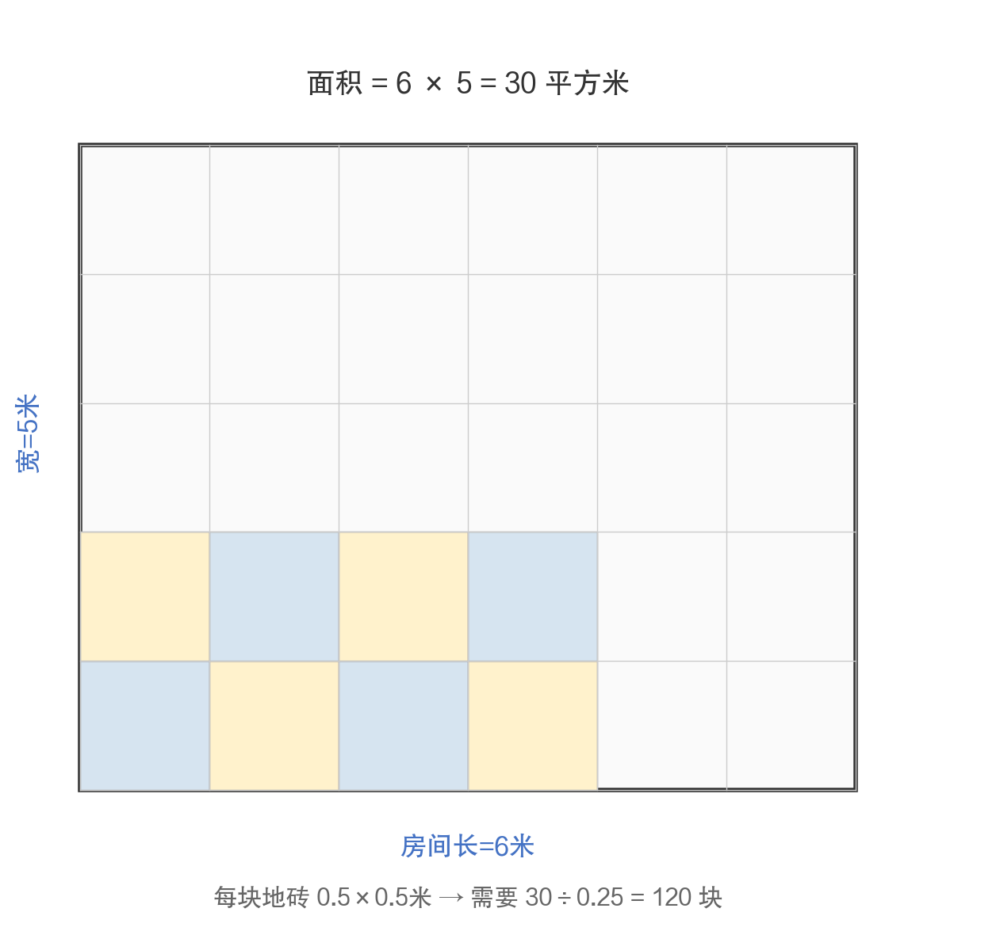
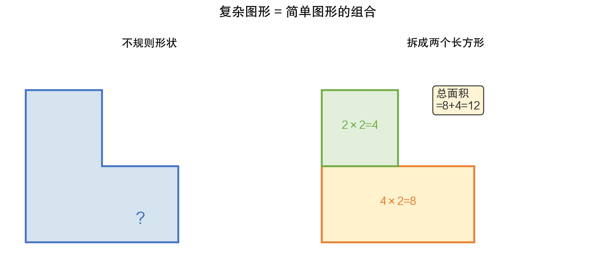

数学有什么用 · 第4期 / 共12期
装修要用多少地砖
小学篇(三)：图形与面积的日常应用
小学数学中，图形与面积的学习是从"数"到"形"的一次飞跃。孩子们第一次意识到，数学不仅能用来算数字，还能用来描述和测量空间。这是几何学的启蒙，也是空间思维的起点。
3.1 常见图形的面积公式
长方形、三角形、圆、梯形——这些都是最基本的几何图形。每种图形都有自己的面积公式，如图3-1所示。

图3-1 常见图形的面积公式
这些公式不需要死记硬背，它们之间有内在的联系：
——三角形的面积 = 底×高÷2，你可以把三角形看成"半个长方形"；
——梯形的面积 = (上底+下底)×高÷2，你可以把梯形看成"两个不同的三角形"拼在一起；
——圆的面积 = π×r²，这个需要理解π（大约3.14），它是圆的周长与直径的比值，是一个永恒的常数。
理解公式之间的联系，比背公式本身重要得多。因为在实际应用中，你遇到的图形往往不是标准的长方形或三角形，而需要把复杂图形拆解成简单图形来计算。
3.2 装修要用多少地砖
装修房子是面积计算最常见的应用场景。如图3-2所示，一个6米长、5米宽的房间，面积是6×5=30平方米。如果选用0.5米×0.5米的地砖（每块0.25平方米），那就需要30÷0.25=120块地砖。

图3-2 装修铺地砖计算
但实际装修中，情况会更复杂：墙角的地砖可能需要切割，会产生损耗，通常要多买5%到10%。如果房间不是规则的长方形（有凸出的壁柜、有内凹的阳台），就需要把不规则的房间拆成几个规则的部分分别计算。
刷墙漆也是类似的问题：要算出所有墙面的面积，减去门窗的面积，再除以每桶漆能涂多少平方米，就知道需要买几桶漆了。这全都是面积计算的实际应用。
3.3 复杂图形的拆分技巧
现实世界中很少有标准的矩形或三角形。一块不规则的田地、一个L形的客厅、一个有弧度的花坛——这些都需要拆分技巧。如图3-3所示。

图3-3 复杂图形 = 简单图形的组合
基本思路有两种：
——加法：把复杂图形拆成几个简单图形，分别计算面积再加起来；
——减法：先算一个更大的简单图形的面积，再减去多余的部分。
比如一个L形客厅，可以拆成两个长方形相加。一个环形跑道的面积，可以用大圆的面积减去小圆的面积。这种"分而治之"的思想，是数学中最基本也是最强大的问题解决策略。
3.3.1 估算农田面积
在农村，农民经常需要估算一块不规则田地的面积。最简单的方法就是把田地近似地看成几个简单图形的组合。比如一块田大致是梯形的，上边30米、下边40米、高20米，面积约 (30+40)×20÷2 = 700平方米 = 1.05亩。
这种估算方法虽然不是精确的，但对于日常的农业生产来说已经够用了。现代的GPS测量仪可以精确地算出不规则田地的面积——但原理也是把不规则形状分成无数个极小的三角形，再把它们的面积加起来。这其实就是微积分的思想——用"无穷多个极小的简单形状来逼近复杂形状"。
3.3.2 估算粉刷面积
装修房子不仅要铺地砖，还要粉刷墙壁。假设一个房间长5米、宽4米、高2.8米，有一扇门（0.9×2米）和一个窗户（1.5×1.2米）：
——四面墙总面积 = 2×(5+4)×2.8 = 50.4平方米
——减去门 = 50.4 - 0.9×2 = 48.6平方米
——减去窗 = 48.6 - 1.5×1.2 = 46.8平方米
——加上天花板 = 46.8 + 5×4 = 66.8平方米
如果一桶墙漆能刷12平方米（通常需要刷两遍），需要 66.8×2÷12 ≈ 12桶。当然，实际购买时通常会多买一两桶备用。
3.4 周长与面积的关系
一个有趣的问题：同样周长的图形，哪种形状面积最大？答案是圆。这就是为什么肥皂泡是球形的——自然界总是选择"效率最高"的形状，用最少的表面（周长）围出最大的空间（面积）。
反过来，同样面积的图形，圆的周长最短。这在工程中有实际应用：水管做成圆形，是因为圆形截面在相同材料（周长）下能通过最多的水（面积）。
你可以和孩子做一个小实验：用一根20厘米长的绑带围成不同形状——正方形（面积25平方厘米）、长方形（比如6×4=24平方厘米）、圆形（面积约31.8平方厘米）。用同样长的绑带，圆围出的面积确实最大。
3.5 小结
图形与面积的学习，是从"数"到"形"的重要跨越。它训练的是空间思维能力——想象、拆分、组合图形的能力。这种能力不仅在装修、种田中有用，在以后学习物理（力的分解）、化学（分子结构）、计算机图形学（3D建模）中都会反复用到。
《数学有什么用》系列 · 第4期 / 共12期
从买菜到人工智能的数学之旅 | 一本写给家长的数学科普
上一期：第3期 | 下一期：第5期
关注公众号，获取系列文章持续更新
数学科普 · 从买菜到人工智能的数学之旅

扫码关注 · 如果觉得有帮助，请分享给更多家长朋友